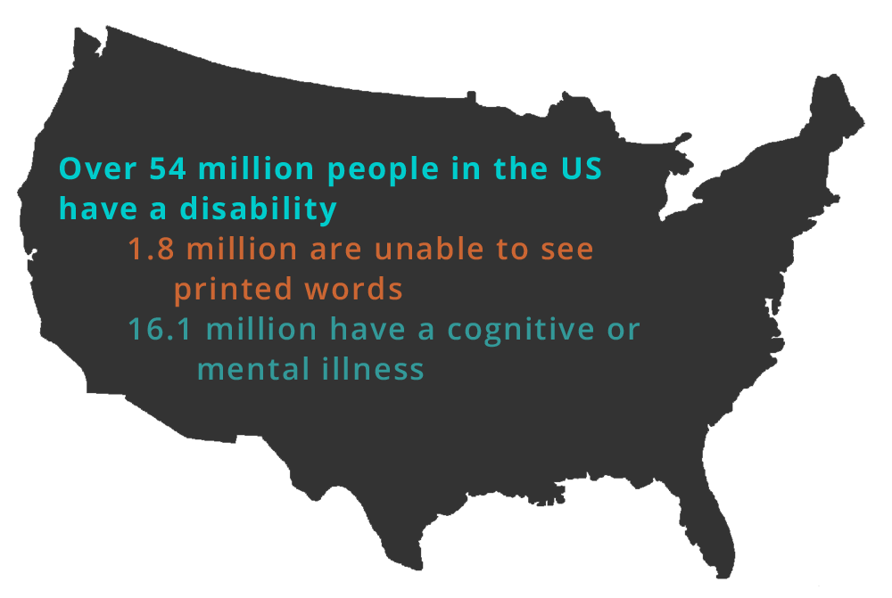
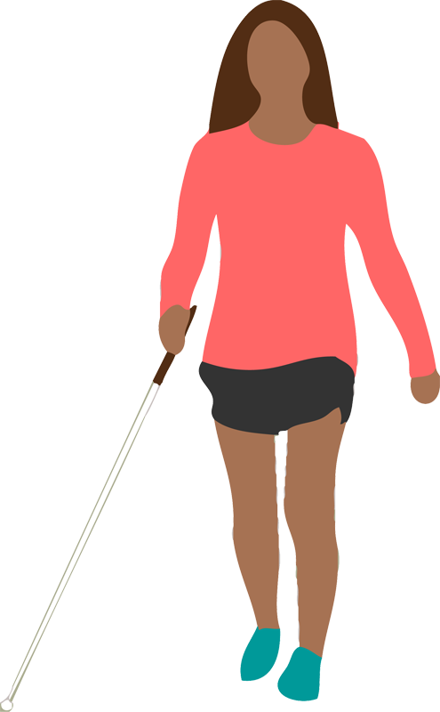
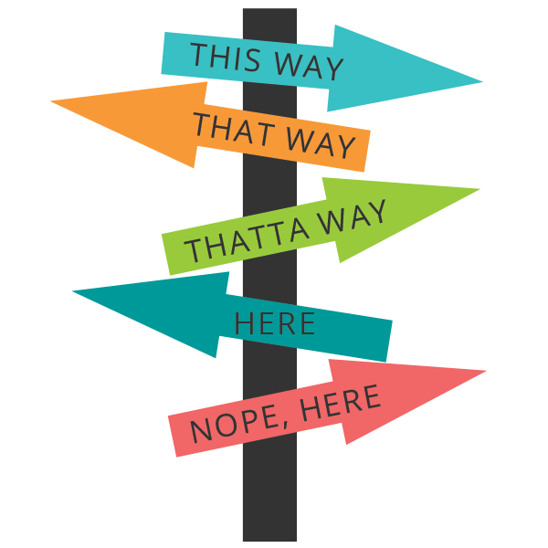
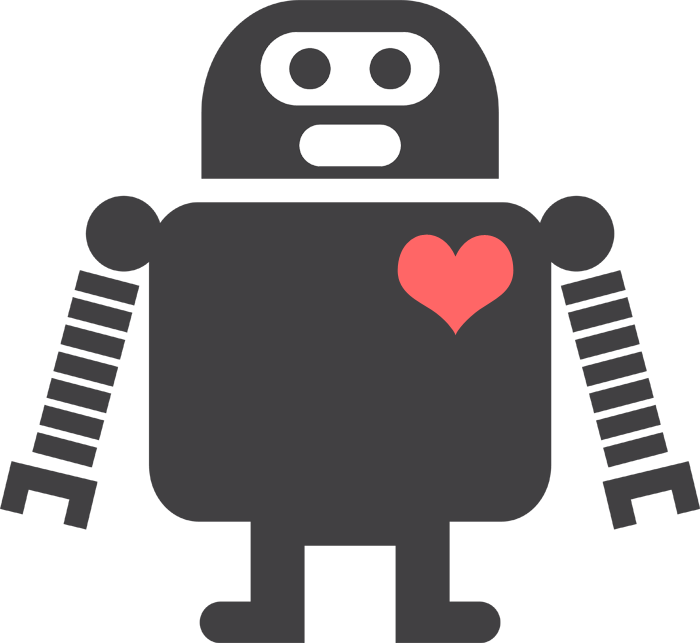

Web Accessibility Workshop
LeeAnn Kinney
@_leekinney
Welcome!
Girl Develop It is here to provide affordable and accessible programs to learn software through mentorship and hands-on instruction.
Some "rules"
- We are here for you!
- Every question is important
- Help each other
- Have fun
Introductions
Tell us about yourself.
- Who are you?
- What do you hope to get out of the class?
- What is your favorite 80's song?
What we're going to cover today
- What web accessibility is
- Why is this important
- We'll look at some examples
- Introduce some tools & techniques
- Website audits
- Questions
Virgin America
“The result is a site that gets flyers booked nearly twice as fast, on any kind of device.”
“After looking at how flyers were using its website to search and book flights, the airline sought to completely reinvent the web experience.”
“I grudgingly admit, the new site not only looks far better, it works better too.”
Web accessibility is about:
- making your sites useful to as many people as possible.
- helping your users.
- awareness & accountability.
- leadership.
Why make our sites accessible?
More stats!
Of all US computer users..
- 17% (21.9 million) have a mild visual difficulty or impairment, 9% (11.1 million) are severe.
- 19% (24.4 million) have a mild dexterity difficulty or impairment, 5% (6.8 million) are severe.
- 18% (24.0 million) have a mild hearing difficulty or impairment, 2% (2.5 million) are severe.
(Source: Study Commissioned by Microsoft Corporation and Conducted by Forrester Research, Inc.
Something to think about...
There’s more users with disabilities than people using IE8.
Still, we tend to drop accessibility in favour of IE8 support.
#fronteers14
— Rik Schennink (@rikschennink) October 10, 2014Benefits of Accessibility
- Keyboard shortcuts
- Using captions and transcripts
- Good alt text
- Many times, good design practices create accessibility as a side effect.
Types of Disability
- Visual disabilities: blind or low-sight, color blind
- Hearing disabilities: deaf or hard-of-hearing
- Physical disabilities: MS, ALS, paraplegic/quadriplegic, epilepsy
- Cognitive disabilities: dyslexia, low literacy, learning disabilities
- Seizures: prone to photoepileptic seizures
- An Alphabet of Accessibility Issues
Visual disabilities
Let's try it
http://bit.ly/p3JmJ2
Alt text
- Alternate text describes pictorial content in words.
- context.
- function not content.
- If an image is purely decorative, use "" to instruct a screen reader to skip it.
<img src="img/twitter-logo.png" alt="follow us on twitter">

Other tips for screen readers
- Tables can be hard to navigate, especially if you use merged cells.
- If you are going to use image maps, make them client-side maps, with alt text on each link. (More on image maps.)
- Yes, you still have to use skipnav links.
- Many users are switching to touch-screen based readers like VoiceOver.
Use color wisely
Provide contrast
The quick brown fox jumps over the lazy dog. The quick brown fox jumps over the lazy dog. The quick brown fox jumps over the lazy dog. The quick brown fox jumps over the lazy dog. The quick brown fox jumps over the lazy dog. The quick brown fox jumps over the lazy dog.
The quick brown fox jumps over the lazy dog. The quick brown fox jumps over the lazy dog. The quick brown fox jumps over the lazy dog. The quick brown fox jumps over the lazy dog. The quick brown fox jumps over the lazy dog. The quick brown fox jumps over the lazy dog.
Color & contrast best practices
- Don't rely on color to indicate something.
- Red/green color blindness is the most common.
- Minimum contrast ratio of 4.5:1 for normal text and 3:1 for large text. (Checker)
- Try zooming in your designs.
Links!
- Link text should make sense.
- Make sure the user can tell where it's going to take them.
- Don't open links in a new window (unless you let the user know first).
- Use :focus wisely.
- Don't rely on color to signify a link.
- Further reading on link text
Hiding content
.hide {display: none;}.hide {visibility: hidden;}.hide {width:0px, height:0px;}.hide {text-indent: -10000px;}Recommended:
.hidden {
position:absolute;
left:-10000px;
top:auto;
width:1px;
height:1px;
overflow:hidden;
}Navigation
- "Skip to main content" links
- Hover navigation
- Make sure users can tab through each element
Let's try it out!
Fire up your favorite text editor...
Other visual disabilities
- If you use color to indicate something, also use another indicator. For example, underline links on hover or mark a required field with an asterisk.
- Red/green color blindness is the most common, so avoid green on red.
- Have a minimum of contrast ratio of 4.5:1 for normal text and 3:1 for large text. (Checker)
- Try zooming in your your designs, to see how they look when enlarged. It is a good idea to use ems instead of pixels when you can.
Dealing with Hearing Disabilities
- Provide captions or transcripts.
- Don't rely on sounds.
- Be especially careful if your site targets older users.
Dealing with Physical Disabilities
- Limited mobility users interact with the screen via keyboard.
- Other users use a mouse, but have trouble with fine motor control.
- Make clickable elements large.
- Avoid clickable page elements that move.
- Animations with rapid flickers.
Don't overwhelm
Provide plenty of time
CAPTCHAs don't just catch robots
Photo credit: Icon vector designed by Freepik

CAPTCHAs
- Aren't blind-friendly.
- Are very difficult for users with learning disabilities like dyslexia.
- Annoy everyone.
- Consider an alternative method.
- We the People example
Dealing with cognitive disabilities
- Not a lot of research in this area.
- Minimize cognitive load.
- Use common icons to mark important tasks.
To sum it all up
Show your users some love!
Browser extensions
Resources
- NonVisual Desktop Access (NVDA),a free and open source screen reader for Windows.
- W3C Web Accessibility Initiative (WAI).
- WebAIM, an accessibility-focused organization with great information.
- Accessibilty Checklist
- Web Accessibility for Designers